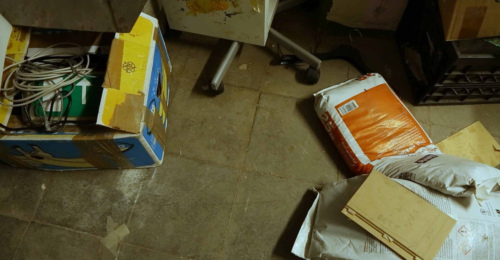
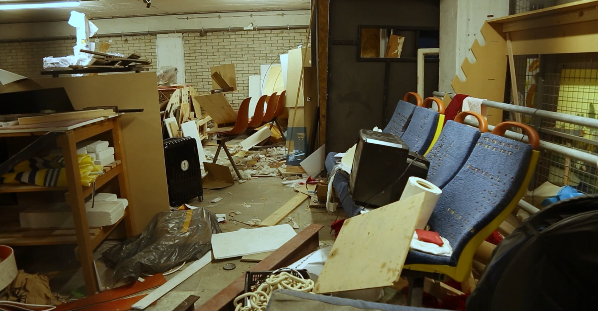
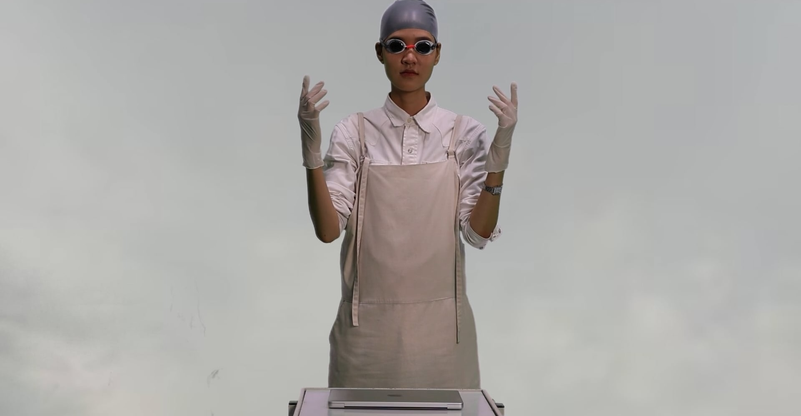
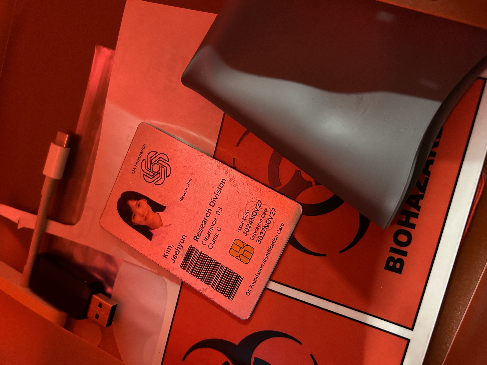

olvehyh
« The Relic of the 21st Century »
Set a thousand years in the future, this short film follows a researcher who discovers a relic from
the 21st century. This short film was featured as part of the Cyberbreach program at the Eye Filmmuseum
in Amsterdam, which premiered on February 8th, 2025.
Short Film | Cinematography | Photography | Set Design
5:48min
Den Haag 2025
Director: Olivia Huynh
Cast: Jaehyun Kim
Typeface: -
Camera: Canon E0S
5:48min
Den Haag 2025
Director: Olivia Huynh
Cast: Jaehyun Kim
Typeface: -
Camera: Canon E0S



